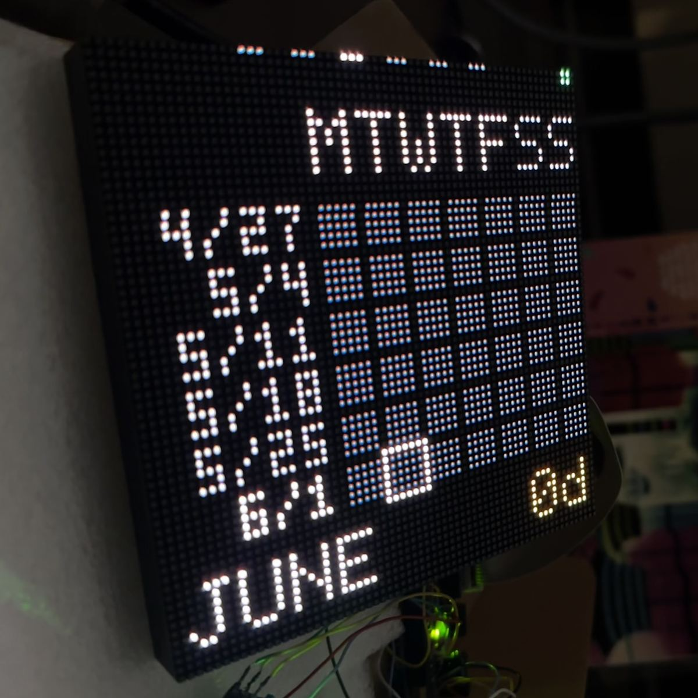

Side experiments.
Things I've built, mostly losing sleep over at night. The good ones turn into long-term projects. The rest (still pretty good) stay in this list as a record.
制作Projects
一Featured / 注目

an ongoing project
hako — an ambient Anki companion
A small wooden box that shows your daily Anki progress on a 64×64 LED matrix. Handmade enclosure, Raspberry Pi inside, talks to AnkiConnect over Wi-Fi. Currently in closed beta with ~5 testers; first batch drops spring 2027.
hakoshop.com二Other things / その他